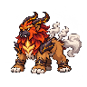

No.255
アルヴェリオン
灯 伝説
焔色のたてがみと金色に輝く双角を持ち、白煙の尾をなびかせて世界中を巡る伝説の獅子。野生のパチモンが出る草むらにだけ潜み、草むらを1歩進むごとに1/700の確率で現れる。野生はLv.70固定。捕獲率は体力に応じて1〜6%。進化せず、Lv.100まで成長する。
基本データ
| 図鑑番号 | No.255 |
|---|---|
| タイプ | 灯タイプ |
| 進化 | 進化しない |
| 入手方法 | 野生のパチモンが出る草むらだけに現れ、草むらを1歩進むごとに1/700の確率で出現する伝説のパチモン（野生Lv.70）。 |
Lv.50の能力値
| 体力 | 312 | |
|---|---|---|
| 物理攻撃 | 188 | |
| 物理防御 | 132 | |
| 特殊攻撃 | 188 | |
| 特殊防御 | 132 | |
| 素早さ | 134 | |
| 命中 | 103 | |
| 回避 | 102 |
上の数値は、振り分けポイントと持ち物の補正を含まないLv.50の基礎能力です。冒険中の能力値はレベルに応じて上がります。通信対戦は基礎能力をLv.50にそろえ、選んだ個体の振り分けポイントはすべて加算します。
覚える技
| 技 | タイプ | 分類 | 威力 | 命中 | PP | 効果 |
|---|---|---|---|---|---|---|
| 灯皇裂爪 | 灯 | 物理 | 64 | 95 | 8 | 金色の灯焔を宿した三連の爪で一撃。相手の防御技によるダメージ軽減を無視する。灯・物理・威力64・命中95・PP8。 |
| 暁天の焔 | 灯 | 特殊 | 72 | 90 | 5 | たてがみに集めた灯を灼熱の奔流に変え、相手の周囲で大きな火柱を咲かせる。灯・特殊・威力72・命中90・PP5。 |
| 万灯の戴冠 | 灯 | 強化 | — | — | 2 | 七つの灯を王冠に結び、物理攻撃・物理防御・特殊攻撃・特殊防御・素早さ・命中・回避を1段階上げる（各最大6段階）。護炎で次に受ける一撃を半減する（貫通技は除く）。最大体力は変わらず、交代・戦闘不能・戦闘終了で解除。灯・PP2。 |
| 命灯再燃 | 灯 | 回復 | — | — | 5 | 消えかけた命の灯を温かな黄金の炎で燃え立たせ、最大体力の45%（端数切り上げ）を回復する。最大体力を超えない。灯・PP5。 PPを1消費する。 |
タイプ相性
灯タイプの技は芽タイプに強く（1.5倍）、潮タイプの技を受けると効果が大きくなります。同じタイプの技を使うと威力が1.15倍になります。